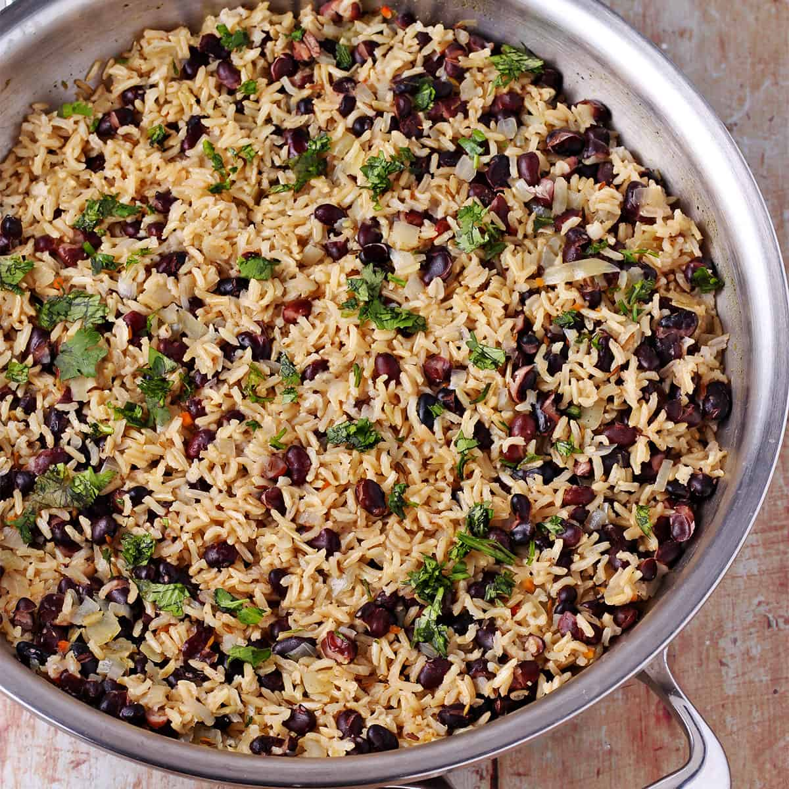

Rice and beans

Rice and Beans
Rice and Beans a meal not to miss during your stay on earth
Ingredients
- rice
- salt
- beans
- meats
- fishes
- Palm /vegetable oil
- Onions
Steps
- boil the beans because it takes a while for it to get done , then add rice after 30 minutesof boiling
- boil the meat
- Add the egusi
- Add Meats , fish and vegetables
- then let it boil for a few minutes